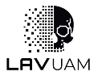
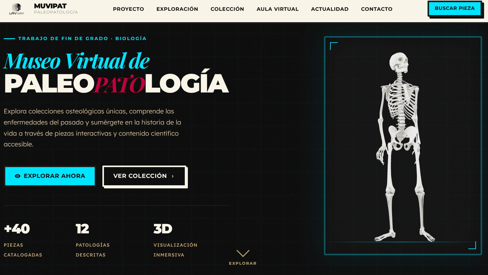
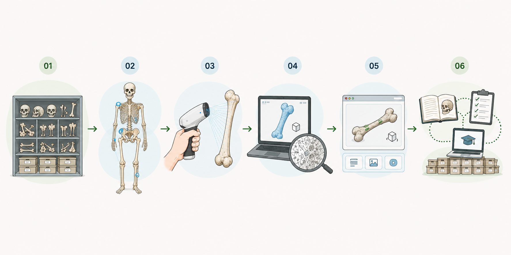

Modelos tridimensionales, docencia y acceso digital a la colección osteológica de la UAM

Material de alto valor científico y docente cuyo estudio requiere observación directa.
Una solución para ampliar el acceso, conservar las piezas y favorecer el aprendizaje activo.
Desarrollo de un prototipo funcional de museo virtual de paleopatología que facilite el acceso, la divulgación y la docencia de la colección paleopatológica de la UAM.

Criterios científicos y técnicos
Creality CR-Scan Raptor
MPA · data.js · GitHub Pages

Casos reales · aprendizaje activo · observación autónoma
Menor manipulación · consulta remota · patrimonio accesible
Escaneado 3D · desarrollo web · comunicación científica
Los modelos 3D no sustituyen a las piezas originales: las complementan.
Es posible desarrollar un museo virtual paleopatológico con tecnologías web estándar y modelos 3D.
MUVIPAT amplía la consulta de piezas y reduce la manipulación física del material osteológico.
La formación en Biología puede enriquecerse mediante digitalización 3D, desarrollo web, datos y comunicación científica.
El prototipo establece una base funcional y ampliable para conectar patrimonio, investigación, docencia y tecnología.